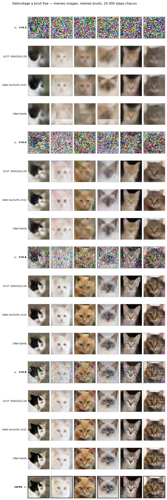
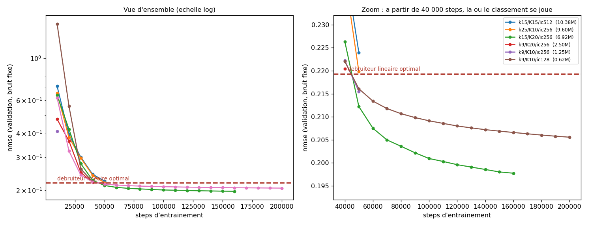
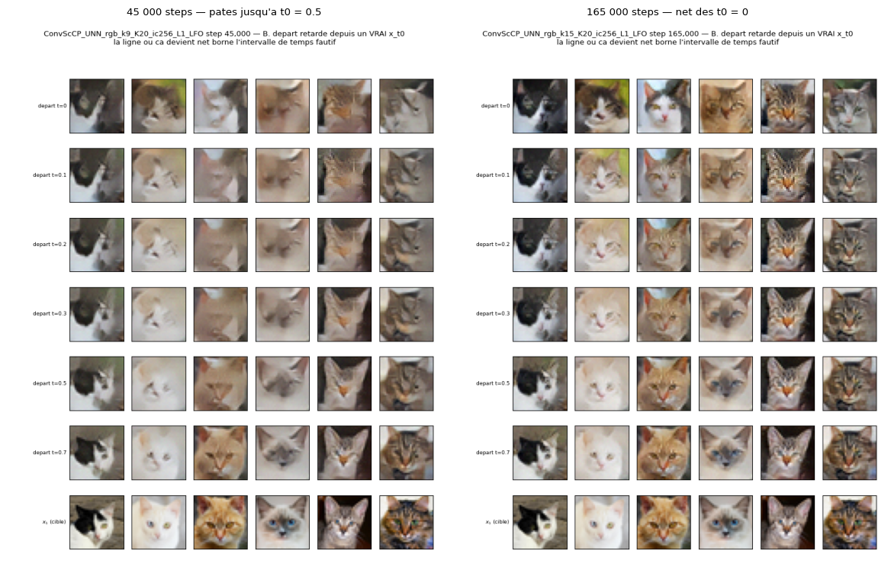
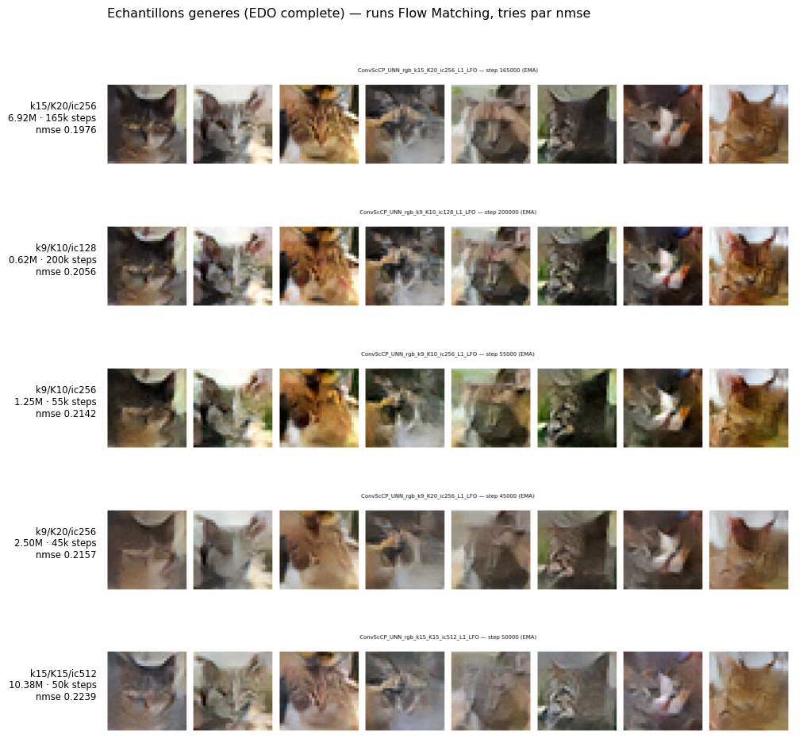

Stage FM/UNN — mesures AFHQ-32 pour le rapport
Ce que le ScCP sait faire comme champ de vitesses de Flow Matching, ce qu'il ne sait pas faire, et à quel prix. Chaque section répond à une affirmation du rapport, en la confirmant, en la nuançant ou en la contredisant.
Le rapport pose en §4.1 l'identité qui fonde tout ce qui suit :
D*t(xt) = E[x₁ | xt, t] = xt + (1−t)·v*(xt, t)
Le champ de vitesses optimal est le débruiteur optimal, à chaque niveau de bruit. Mesurer la qualité de débruitage à quelques t fixes n'est donc pas un proxy commode : c'est l'objectif du Flow Matching restreint à un support fini. C'est ce qui autorise à comparer, sur une même métrique, des modèles entraînés au débruitage seul et des modèles entraînés en Flow Matching complet.
Ce qui disparaît en revanche, c'est l'échantillonnage — pas d'EDO, pas d'accumulation d'erreur. Le banc mesure la capacité de l'architecture, pas la qualité générative finale. Deux sections plus bas, on verra que l'écart entre les deux est exactement là où se logeaient les « pâtés ».
l1c, silu) et la version LNO — seul axe jamais exploré, et le seul qui ait payé côté UNet.§ « Structural differences with a UNet » et § Model Variants — les quatre points confrontés aux données.
« This locality does not appear to limit generation as long as the network has enough layers, but we have not tested this systematically. »
nuancé Testé sur un plan factoriel complet. La localité ne limite pas la reconstruction : à t = 0,8 le ScCP restitue oreilles et fourrure. Mais « assez de couches » ne suffit pas — à budget court, doubler K ne rapporte que 5 % ; à budget long, un modèle plus large et plus profond garde 4,0 % d'avance, IC 95 % [+3,7 ; +4,4]. L'affirmation tient pour la capacité de détail, pas pour la qualité atteignable.
« The only nonlinearity in ScCP is a proximal operator — here a clipping with a learned, time-dependent radius. »
confirmé, et c'est le goulot Vérifié dans les poids : ni Wk, ni Vk, ni τk, ni σk, ni αk ne dépendent de t. Toute la dépendance temporelle du réseau passe par les K rayons rk(t) — dix nombres pour K = 10, contre un plongement temporel par bloc et par canal chez un UNet.
« For convolutional or ℓ₁ proximal operator, a small MLP maps t ↦ a channel-wise bias. »
à corriger dans le .tex Le code produit un scalaire, pas un biais par canal : prox.time_scaling est un Linear(1,32) → SiLU → Linear(32,1), sortie de dimension 1. La variante décrite par le rapport existe — L1ProxConv(channels=ic) — mais n'est pas celle qui a été entraînée.
« K ∈ {3, 5, 10, 15} for per-layer models. »
à étendre Les runs AFHQ vont jusqu'à K = 50. Au-delà de K = 30 le gain devient indétectable : K = 30 → 50 rapporte 3,5 % à t = 0,8, pour 70 % de calcul en plus.
Identique d'un run à l'autre ; tout ce qui suit en dépend.
Chaque modèle reconstruit x₁ à partir de xt = (1−t)·x₀ + t·x₁ à quatre niveaux de bruit fixes, en paramétrisation x-prediction — celle du rapport. La mesure porte sur 512 images jamais vues, avec un bruit tiré une fois pour toutes, donc comparable au bit près entre modèles.
20 000 steps chacun, couplage indépendant, même loss — la seule comparaison inter-familles valide du lot.
| Modèle | Paramètres | nmse | IC 95 % | it/s | Temps GPU |
|---|---|---|---|---|---|
| UNet torchcfm ch64 | 4 437 699 | 0,1858 | [0,1818 – 0,1898] | 9,3 | 36 min |
| UNet torchcfm ch32 | 1 113 955 | 0,1904 | [0,1863 – 0,1945] | 15,7 | 21 min |
| ScCP k9 / K20 / ic128 | 1 248 661 | 0,2086 | [0,2042 – 0,2130] | 2,6 | 2 h 09 |
| UNet Kamb | 2 107 366 | 0,2093 | [0,2050 – 0,2138] | 26,2 | 12,7 min |
| Débruiteur linéaire optimal | — | 0,2193 | — | — | — |
| Prédicteur constant | — | 1,0000 | — | — | — |
Deux écarts appariés, sur les mêmes images rééchantillonnées :
ScCP contre UNet Kamb : +0,4 %, IC [−0,0006 ; +0,0021]. Statistiquement indiscernables — pour dix fois le temps GPU.
ScCP contre UNet torchcfm ch32 : +9,6 %, IC [+8,9 ; +10,3]. Significatif, et ce UNet a moins de paramètres que le ScCP tout en s'entraînant six fois plus vite.
Les colonnes it/s et temps GPU renseignent les entrées manquantes de la table quantitative du rapport, qui les appelle explicitement.
Le ScCP atteint la qualité d'un UNet minimal, pas celle d'un UNet résiduel moderne. Et l'écart n'est pas un artefact de budget : poussé à 200 000 steps, le ScCP plafonne à 0,2056, toujours 8 % au-dessus d'un UNet plus petit entraîné en vingt et une minutes.
Mêmes images, mêmes bruits, mêmes 20 000 steps.

Cette planche explique aussi pourquoi les chiffres agrégés discriminent mal. La nmse moyenne est dominée par t = 0,2 — 0,45 contre 0,05 à t = 0,8, un facteur neuf — c'est-à-dire par le régime où toutes les architectures se ressemblent. Les différences visibles vivent dans la partie du budget qui pèse le moins.
Plan factoriel complet, 12 configurations ScCP, 3 000 steps : k ∈ {9, 15} × K ∈ {5, 10, 20} × ic ∈ {128, 256}.
Ce plan factoriel a été mesuré à 3 000 steps, et à ce budget les douze configurations sont toutes entre 4 % et 20 % moins bonnes que le débruiteur linéaire optimal. Aucune n'a donc appris quoi que ce soit qu'un opérateur linéaire ne fasse pas.
Les exposants ci-dessous décrivent en conséquence la vitesse à laquelle une configuration s'approche d'un plancher qu'aucune n'a atteint — une mesure d'optimisation, pas de qualité atteignable. Ils gardent leur valeur pour choisir une configuration de prototypage à budget serré ; ils n'en ont aucune pour conclure qu'une architecture vaut mieux qu'une autre.
| Levier | Exposant | Effet d'un doublement | Effet sur le coût |
|---|---|---|---|
| Profondeur K | −0,076 | −5,1 % | ×2 (linéaire) |
| Noyau k | −0,034 | −2,4 % | ×2,5 |
| Espace dual ic | +0,011 | +0,8 % | ×2 |
À 3 000 steps, les douze configurations tiennent dans 15,8 % de nmse alors que leurs paramètres varient d'un facteur 22 et leur temps GPU d'un facteur 19. La taille de l'espace dual y est inerte, voire nuisible.
Un résultat du même genre existe côté UNet, et celui-là est mesuré dans un régime valide : à 20 000 steps, où les modèles battent le filtre linéaire de 13 %, quadrupler la capacité rapporte +2,5 % [+2,2 ; +2,8], quand changer de type de bloc — du UNet de Kamb au UNet torchcfm — en rapporte 12,7 %. Cinq fois plus.
Les runs Flow Matching archivent leurs poids tous les 10 000 steps. Plusieurs architectures existent donc déjà aux mêmes budgets : il suffisait de les évaluer. Cinquante-six checkpoints, aucun entraînement.
| Configuration | Paramètres | nmse à 40k | nmse à 50k | Régime à 50k |
|---|---|---|---|---|
| k15 / K20 / ic256 | 6 919 061 | 0,2264 | 0,2122 | valide |
| k9 / K10 / ic256 | 1 247 691 | 0,2222 | 0,2155 | valide |
| k9 / K10 / ic128 | 624 331 | 0,2220 | 0,2161 | valide |
| k9 / K20 / ic256 | 2 495 381 | 0,2205 | — | — |
| Débruiteur linéaire optimal | — | 0,2193 | 0,2193 | — |
| k25 / K10 / ic256 | 9 603 531 | 0,2406 | 0,2198 | sous-entraîné |
| k15 / K15 / ic512 | 10 377 136 | 0,2434 | 0,2239 | sous-entraîné |
Le classement s'inverse entre 40 000 et 50 000 steps. À 40k, la meilleure configuration est k9/K20/ic256 et le gros modèle k15/K20/ic256 n'arrive que quatrième ; à 50k ce dernier passe premier et le reste jusqu'à 160 000 steps. C'est la démonstration directe qu'un classement établi sous le plancher linéaire ne prédit pas le classement final — et donc que le tableau à 3 000 steps ne pouvait pas trancher.
En revanche, l'inertie de l'espace dual survit. À 50 000 steps, dans un régime où les deux battent le filtre linéaire, k9/K10/ic256 (1,25M) fait 0,2155 contre 0,2161 pour k9/K10/ic128 (0,62M) : 0,3 % pour deux fois plus de paramètres. C'était le résultat le plus surprenant du plan factoriel, et c'est celui qui tient.
Les deux plus gros modèles ne franchissent jamais le plancher, même à 50 000 steps — 9,60M et 10,38M de paramètres, tous deux encore au-dessus d'un opérateur linéaire.

À budget court, la capacité est inerte ; c'est le type de bloc qui décide. Mais cette platitude est un effet du sous-entraînement. Poussées à leur budget, deux configurations que le balayage à 3 000 steps déclarait équivalentes se séparent : le gros modèle (6,92M, 165 000 steps) bat le petit (0,62M, 200 000 steps) de 4,0 %, IC [+3,7 ; +4,4] — significatif, et acquis malgré 35 000 steps de moins.
La capacité finit donc par payer, mais seulement après ~150 000 steps. Le petit modèle obtient tout de même 96 % de la qualité pour un septième du temps GPU et onze fois moins de paramètres.
Les archives permettent aussi de dater cette séparation : elle apparaît juste après le franchissement du plancher linéaire, vers 50 000 steps, et reste stable entre 4 et 4,4 % jusqu'à 160 000. Ce n'est donc pas un effet qui se creuse indéfiniment avec le budget — il s'installe dès que les modèles deviennent comparables, puis ne bouge plus.
Conséquence directe du § « Nonlinearity » du rapport, vérifiée dans les poids.
Dans ConvScCP_UNN(use_Unet="l1"), la seule dépendance temporelle passe par le rayon du prox ℓ₁ :
rk(t) = softplus(MLPk(t)), proxk(u) = clamp(u, −rk, +rk)
Avec K = 10, tout le conditionnement temporel du réseau tient dans dix nombres. Les rayons appris sont monotones, lisses, décroissants — le prox laisse passer à t petit, seuille fort à t grand — et leur dérivée normalisée ne dépasse pas 5,4.
Conséquence pratique : un encodage sinusoïdal du temps n'apporterait rien. Il sert à représenter des dépendances à haute fréquence en t, or le réseau n'en demande pas. Ce qui manque n'est pas la paramétrisation du temps, c'est la largeur du canal par lequel il agit.
Un détail à surveiller : sur le run à 165 000 steps, deux couches ont un rayon qui s'effondre — r(1) = 0,0000 et 0,0002. Leur prox annule tout le signal dual, elles sont éteintes. Si des couches meurent, augmenter K est encore plus vain que ne le suggère l'exposant.
Runs Flow Matching complets, results_afhq32.
| Run | Paramètres | Steps | Temps | nmse | t₀* |
|---|---|---|---|---|---|
| k15 / K20 / ic256 | 6 919 061 | 165 000 | 74,7 h | 0,1976 | 0 |
| k9 / K10 / ic128 | 624 331 | 200 000 | 10,9 h | 0,2056 | ≈ 0,2 |
| k9 / K10 / ic128 | 624 331 | 100 000 | 5,4 h | 0,2091 | ≈ 0,3 |
| k9 / K10 / ic256 | 1 247 691 | 55 000 | — | 0,2142 | ≈ 0,5 |
| k9 / K20 / ic256 | 2 495 381 | 45 000 | — | 0,2157 | ≈ 0,5 |
| Débruiteur linéaire optimal | — | — | — | 0,2193 | — |
| k25 / K10 / ic256 | 9 603 531 | 50 000 | — | 0,2198 | 0,5 – 0,7 |
| k15 / K15 / ic512 | 10 377 136 | 50 000 | 32,4 h | 0,2239 | ≈ 0,7 |
De 100 000 à 200 000 steps, la nmse passe de 0,2091 à 0,2056 (−1,7 %) pour 5,5 h de GPU supplémentaires, et les gains sont tombés à 0,10 % par tranche de 10 000 steps. Le modèle est à plat.
La colonne t₀* vient d'un test de départ retardé : on part d'un vrai xt₀ et on n'intègre que [t₀, 1]. Le t₀ où les images deviennent nettes borne l'intervalle de temps encore mal appris. Il classe les runs exactement comme la nmse, et exactement comme l'œil.


Suivies puis réfutées par la mesure ; les noter évite de les reprendre.
La grille de débruitage montre le contraire : les mêmes poids qui produisent des pâtés en génération reconstruisent, à t = 0,8, des chats nets avec oreilles et fourrure. La capacité à représenter du détail est intacte. Ce qui manquait était la première moitié de la trajectoire.
Euler à 10, 50, 200 et 1 000 pas et dopri5 à tolérance 10⁻⁵ donnent des images identiques. L'intégration est convergée dès dix pas. L'erreur est dans le champ, pas dans sa discrétisation.
L'écart entre nmse d'entraînement et nmse de validation est nul sur quatre checkpoints — jusqu'à 10,4M paramètres et l'équivalent de 2 500 époques. Aucune mémorisation : ces modèles sous-apprennent. Ajouter des données, c'est en donner plus à quelqu'un qui n'a pas fini d'exploiter ce qu'il a.
Trois familles de protocole cohabitent dans les dossiers de résultats : couplage indépendant avec loss x₁ à 3 000 steps, couplage OT avec loss vitesse sur t = [0,8] seul, et les runs à 20 000 steps. Un classement global sur la nmse mélangerait architecture et protocole, et condamnerait des modèles pour une raison qui n'a rien à voir avec eux. analyze_denoise_probe.py détecte les familles et refuse de les comparer entre elles.
Balayer le type de prox. prox=l1c apprend un rayon par canal dual : 1 280 scalaires de conditionnement au lieu de 10, pour quatre mille paramètres de plus par couche — et c'est exactement ce que décrit déjà la ligne 1074 du rapport. Cela reste un prox ℓ₁ exact, celui de la norme pondérée, donc la propriété « la sortie est un opérateur proximal » survit. Seul axe qui attaque le goulot identifié, et seul dont l'analogue a payé côté UNet.
Isoler la profondeur. Dans la comparaison à budget long, k, K et ic changent en même temps : l'écart de 4,0 % n'est attribuable à aucun des trois. Un seul run — k9 / K20 / ic128 à 200 000 steps, environ 20 h — sépare la profondeur, le levier que le balayage court désignait comme le seul favorable.
Calculer un FID sur les checkpoints Flow Matching, pour remplir la colonne restée vide de la table quantitative du rapport et vérifier que le classement par nmse n'est pas seulement ordinal.